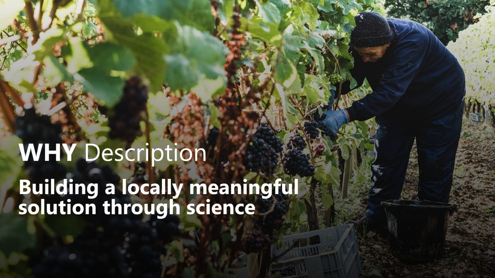

2,4-Dichlorophenoxyacetic acid (2,4-D) is an extensively utilized herbicide against broadleaf weeds, discovered in the 1940s, being the first modern selective systemic herbicide developed for commercial agricultural use [1]. Chemically, 2,4-D acts as a synthetic auxin, mimicking the natural plant hormone indole-3-acetic acid (IAA) [2].
2,4-D can include multiple chemical forms, including salts, esters, and acid. It has low solubility in water, so commercial products are formulated as amine salts or esters to improve handling, solubility, and penetration [3]. Amine formulations dissolve easily in water, exhibit negligible vapor pressure, and are generally preferred near sensitive crops, while ester formulations are oil-soluble, penetrate waxy leaf cuticles faster, and resist rain wash-off better, but traditionally carry a higher risk of volatilization.
At the molecular level, 2,4-D binds directly to receptor proteins inside sensitive plant cells, triggering the exacerbated transcription of auxin responsive genes [2]. This upregulation of auxin induced signaling causes excessive cell elongation and uncontrolled cell division, as well as elevated synthesis of ethylene and abscisic acid. The overproduction of these hormones causes stomatal closure, production of reactive oxygen species, epinasty (twisted stems and curled leaves), vascular tissue collapse, and metabolic exhaustion, leading to plant death [4]. However, monocotyledonous plants have a natural resistance to 2,4-D due to their limited vascular transport and structural differences in target receptors [5].
Inside a sensitive plant
Select a stage to revisit the mechanism described above.
Conceptual illustration; not an anatomical model. Excerpts from the paragraph above.
Therefore, 2,4-D is primarily utilized as a selective herbicide to control broadleaf (dicotyledonous) weeds while leaving grass crops (monocotyledonous plants) unharmed [2]. Major agricultural uses include weed control in cereal crops such as soybeans, corn, wheat, barley, sorghum, and sugarcane [2]. Alarmingly, its adoption has grown significantly with the development of genetically engineered crops resistant to 2,4-D, such as corn, soybeans, and cotton, encouraging its application even during the growing seasons of such cultivars [6].
2,4-D remains one of the most widely used herbicides globally due to its cost-effectiveness, broad-spectrum control over broadleaf species, and decades of application, making it accessible for large-scale crop production in both developed and developing agricultural economies [7]. As widespread weed resistance to glyphosate developed worldwide, agronomists turned to synthetic auxins like 2,4-D as complementary or alternative mechanisms of action to suppress resistant populations [6].
Though regulatory guidelines limit the application of 2,4-D on amount, local wind speed, temperature, buffer zones and nozzle sizes [8], off-target movement of 2,4-D often occurs through physical spray drift. High volatility in high-ester formulations allows herbicide vapor to lift off soil and leaf surfaces hours or days after application and travel downwind [9]. Vapor drift poses serious risks to nearby sensitive broadleaf species, including grapes, tomatoes, cotton, ornamental plants and even non-modified soybeans, which are naturally susceptible to 2,4-D contamination [9].
How does off-target movement happen?
Spray drift: droplets move away from the target during application.
Conceptual illustration only. Particle paths, distances and timing are not predictions or measurements.
In soils 2,4-D is primarily degraded through microorganisms, with its half life ranging from a few days to several weeks depending on weather and soil conditions [10]. 2,4-D has low toxicity to birds and honeybees, but non-target terrestrial flora near spray zones face substantial non-lethal and lethal injury risks from off-target deposition [1]. Aquatic toxicity varies by formulation, with ester derivatives displaying higher toxicity to fish and aquatic invertebrates than salt derivatives [1].
References
[1] U.S. ENVIRONMENTAL PROTECTION AGENCY (EPA). 2,4-D [Overviews and Factsheets]. 2014. Disponível em: https://www.epa.gov/ingredients-used-pesticide-products/24-d.
[2] GROSSMANN, K. Auxin herbicides: Current status of mechanism and mode of action. Pest Management Science, v. 66, n. 2, p. 113–120, 2010.
[3] NELSON, J. E.; SCHNEIDER, L. L. Properties and Characteristics of Amine and Ester Formulations of 2,4-D. [s.d.].
[4] SONG, Y. Insight into the mode of action of 2,4‐dichlorophenoxyacetic acid (2,4‐D) as an herbicide. Journal of Integrative Plant Biology, v. 56, n. 2, p. 106–113, 2014.
[5] KELLEY, K. B.; RIECHERS, D. E. Recent developments in auxin biology and new opportunities for auxinic herbicide research. Pesticide Biochemistry and Physiology, v. 89, n. 1, p. 1–11, 2007.
[6] MORTENSEN, D. A. et al. Navigating a Critical Juncture for Sustainable Weed Management. BioScience, v. 62, n. 1, p. 75–84, 2012.
[7] REVISTA CULTIVAR. 2,4-D: Controversial since always, essential as never. 2017. Disponível em: https://revistacultivar.com/articles/2-4-d-controversy-has-always-been-as-essential-as-ever.
[8] U.S. ENVIRONMENTAL PROTECTION AGENCY (EPA). Reregistration Eligibility Decision for 2,4-D. 2005.
[9] EGAN, J. F.; MORTENSEN, D. A. Quantifying vapor drift of dicamba herbicides applied to soybean. Environmental Toxicology and Chemistry, v. 31, n. 5, p. 1023–1031, 2012.
[10] CHEN, S.-F. et al. Microorganism-Driven 2,4-D Biodegradation: Current Status and Emerging Opportunities. Molecules, v. 29, n. 16, p. 3869, 2024.